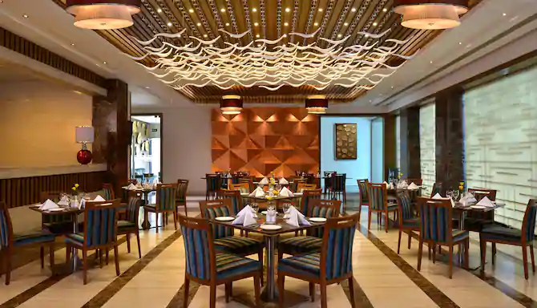
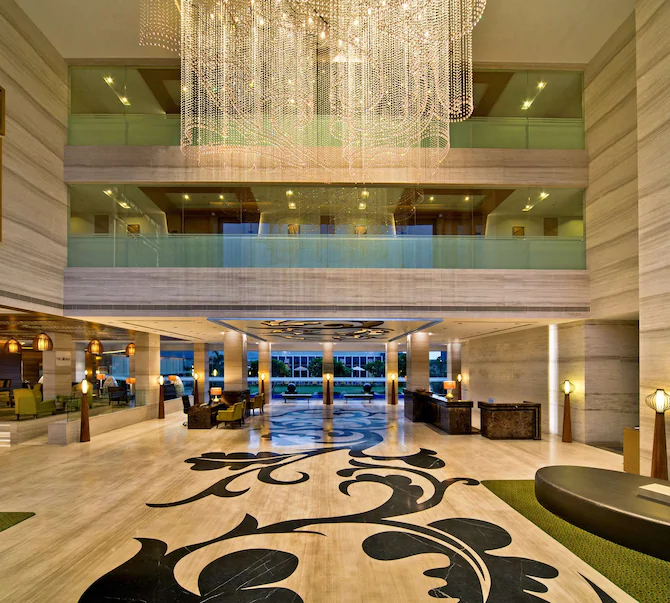

No matter what time of day you arrive, you can always find a delicious meal at Waves,
our 24-hour on-site restaurant. Savor delicious tandoori cuisine, or order a familiar
favorite from our selection of international delicacies. For classic and contemporary
takes on Pan-Asian cooking, try Thai, Malaysian, Japanese, and Chinese cuisine at Asian
Station. If you feel like sampling a bit of everything, order dim sum....
At the end of the day, gather with friends, family, clients, or colleagues for a hot
cup of coffee and a pastry in The Lounge.
You can also order room service 24 hours a
day for a meal in the privacy and comfort of your hotel room.Treat yourself and your companions to the best international cuisine in Gandhidham at our hotel’s two on-site restaurants. Radisson Hotel Kandla offers something for everyone 24 hours a day at Waves, which serves French toast, Spanish omelets, Indian tandoori dishes, and more.

After a day of visiting fascinating area attractions like the markets of Bhuj or the mosques of Bhadreshwar, unwind in one of 117 rooms and suites at Radisson Hotel Kandla. Enjoy a relaxing stay in modern rooms and suites with soothing contemporary décor, free Wi-Fi; book a Business Class room for exclusive access to the Business Class Floor and the Business Class Lounge. You can upgrade your stay even further by booking one of our spacious suites, featuring perks such as a separate living room and additional TVs.
Accessibility features
Situated in the Kutch district of Gujarat, our hotel is within driving distance of popular area attractions like Gandhi Samadhi, a memorial to Mahatma Gandhi. In the city of Gandhidham, explore ornate temples, go shopping, and attend festivals throughout the year. Don’t miss these favorites during your stay:
59.63 mi / 95.97 km from the hotel
As the largest natural grassland in India, the Banni Grassland is known for its diverse array of wildlife and for the remarkable communities that farm the land using centuries-old techniques.
30.38 mi / 48.89 km from the hotel
Wander through the city's maze of alleys to explore opulent palaces and temples. Allow extra time to browse bazaars filled with jewelry, and other handicrafts. If you're a history buff, visit the Kutch Museum.
2 mi / 3.22 km from the hotel
Follow the stone footpath to the eternal flame memorial built where Mahatma Gandhi was cremated on January 31, 1948.
18.07 mi / 29.08 km from the hotel
Known for its many ancient mosques, Jain temples and other historical sites, Bhadreshwar is a must-see destination, filled with awe-inspiring architecture that dates back more than a thousand years.
2.18 mi / 3.5 km from the hotel
Founded in the 1950s as a refugee settlement, Gandhidham has become one of the fastest-growing cities in Gujarat, drawing numerous businesses, and restaurants to its thriving community.
69.07 mi / 111.15 km from the hotel
Located in the world's largest salt desert, the Rann of Kutch draws thousands of visitors each year to witness the transformation from desert to marsh during monsoon season.